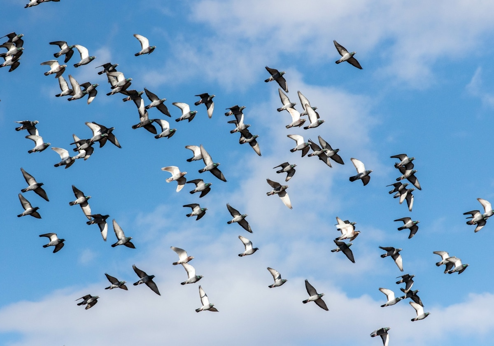

Las aves zancudas son conocidas por su habilidad para volar grandes distancias con sus largas patas y alas. Estas aves tienen características únicas que les permiten planear en el aire durante largos períodos de tiempo y navegar por diferentes entornos, desde tierras pantanosas hasta áreas de aguas abiertas.
Las alas son especialmente adaptables para el vuelo. Son grandes y fuertes, lo que les permite generar el empuje necesario para levantar su cuerpo del suelo. Además, las plumas de las alas tienen un diseño especial que les permite ajustar su forma y ángulo para controlar su vuelo.
Las patas largas y delgadas de las aves zancudas también desempeñan un papel importante en su habilidad para volar. Cuando vuelan, las patas se extienden detrás de ellas y actúan como timones, ayudándolas a maniobrar y cambiar de dirección. También les permiten aterrizar suavemente en superficies blandas, como el agua o el lodo.

Hábitats:
En cuanto a su hábitat, las aves zancudas se encuentran comúnmente en zonas costeras, lagos, ríos y humedales. Estos hábitats proporcionan a estas aves un ambiente ideal para alimentarse de invertebrados acuáticos, peces y otros animales pequeños. Muchas aves zancudas también utilizan estos hábitats para anidar y criar a sus crías.
Como es su nido:
Los nidos son estructuras impresionantes diseñadas para proporcionar un refugio seguro y cómodo para sus huevos y crías. Estas aves construyen sus nidos en una variedad de lugares, desde el suelo hasta los árboles, dependiendo de la especie y las condiciones ambientales. Suelen estar construidos con ramitas, hojas, hierba, musgo y barro, y pueden ser bastante grandes y complejos.
Migración:
La migración de estas aves es un fenómeno natural fascinante que ocurre cada año en todo el mundo. Viajan largas distancias desde sus lugares de reproducción en el norte hasta sus áreas de invernada en el sur, aprovechando los recursos alimenticios disponibles a lo largo del camino.